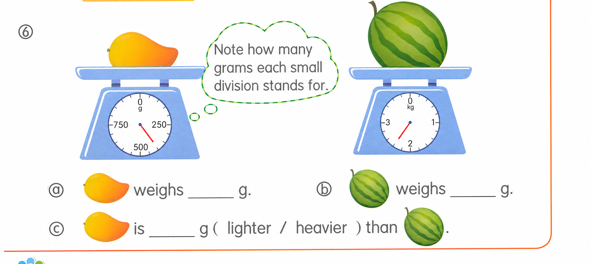
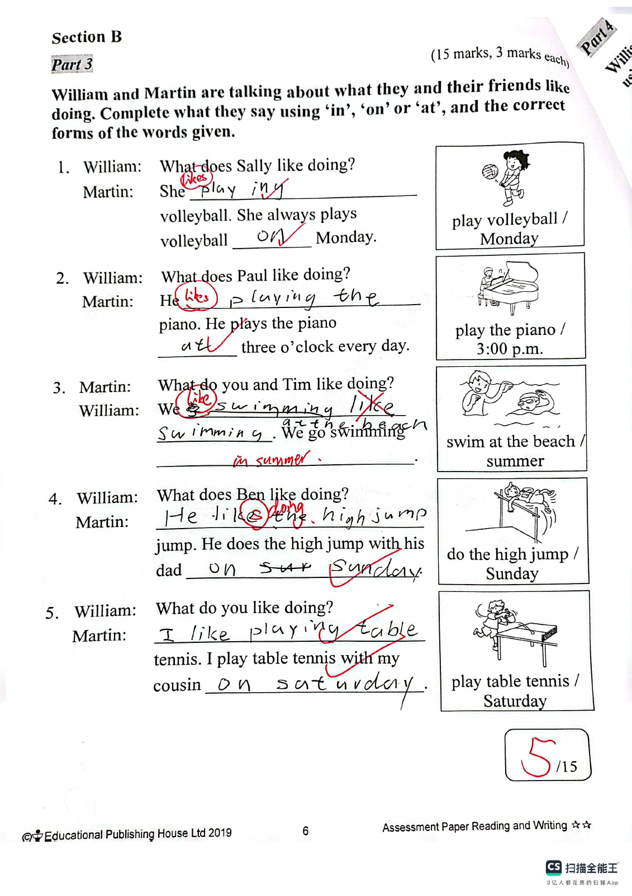
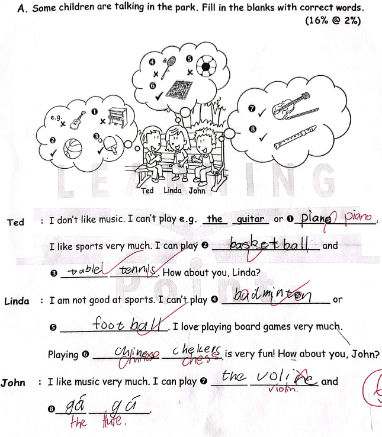

Answer: (a) 400 g; (b) 2400 g; (c) 2000 g, lighter
已掌握
| # | 单词/词组 | 中文意思 | 例句/说明 | 已掌握 |
|---|---|---|---|---|
| noun 名词 | ||||
| 1 | library | 图书馆 | I read books in the library. | |
| 2 | playroom | 游戏房 | The children are in the playroom. | |
| 3 | cream | 奶油 | I like cream on my cake. | |
| 4 | hall | 大厅 | We meet in the school hall. | |
| 5 | cinema | 电影院 | We watch films at the cinema. | |
| 6 | Sunday | 周日 | We visit Grandma on Sunday. | |
| 7 | chef | 厨师 | The chef cooks dinner. | |
| 8 | dinner | 晚饭 | We eat dinner at home. | |
| 9 | glasses | 眼镜 | He wears glasses. | |
| verb 动词 | ||||
| 10 | feel | 感觉 | I feel happy today. | |
| 11 | carry | 带有/搬运 | I carry my bag. | |
| phrase 短语 | ||||
| 12 | stay at home | 留在家里 | We stay at home on rainy days. | |
| 13 | look after | 照顾 | I look after my little sister. | |
| 14 | Christmas Eve | 平安夜 | We decorate the tree on Christmas Eve. | |
| adjective 形容词 | ||||
| 15 | thirsty | 口渴的 | I am thirsty after running. | |
| 16 | clever | 聪明的 | She is clever and kind. | |
| 17 | hard-working | 勤劳的，勤奋的 | She is a hard-working student. | |
| 18 | pretty | 漂亮的 | The flower is pretty. | |
| adverb 副词 | ||||
| 19 | seldom | 很少 | I seldom eat sweets. | |
| uncategorized 未分类 | ||||
| 20 | meet | 见面 | Let's meet at the school gate. | |
| # | 单词/词组 | 中文意思 | 例句/说明 | 已掌握 |
|---|---|---|---|---|
| adjective 形容词 | ||||
| 1 | correct | 正确的 | This answer is correct. | |
| 2 | wise | 明智的；聪明的 | The wise man gave good advice. | |
| 3 | polite | 有礼貌的 | It is polite to say "thank you". | |
| 4 | extra | 额外的 | We need an extra chair for our guest. | |
| noun 名词 | ||||
| 5 | home | 家 | We stayed at home in the afternoon. | |
| 6 | shell | 壳子 | The shell is hard. | |
| 7 | reindeer | 驯鹿 | The reindeer is walking in the snow. | |
| 8 | flat | 公寓 | We live in a flat. | |
| 9 | badminton | 羽毛球 | I play badminton with my friend. | |
| 10 | event | 事件 | This event is fun. | |
| 11 | roundabout | 旋转木马 | The roundabout is in the playground. | |
| 12 | ice-skating | 溜冰 | She likes ice-skating in winter. | |
| 13 | garlic | 大蒜 | I like vegetables with garlic. | |
| 14 | teatime | 下午茶时间 | Look at the menu. It is teatime. | |
| 15 | chemical | 化学物质 | The science teacher keeps the chemicals in a locked cupboard. | |
| 16 | pudding | 布丁 | We ate Christmas pudding after dinner. | |
| 17 | stocking | 圣诞袜 | We also like to hang up Christmas stockings on our bedroom doors. | |
| noun phrase 名词短语 | ||||
| 18 | a box of chicken wings | 一盒鸡翅 | May I have a box of chicken wings, please? | |
| 19 | special set | 特惠套装 | The special set includes a sandwich and a drink. | |
| verb 动词 | ||||
| 20 | arrive | 到达 | I arrive at school on time. | |
| 21 | leave | 离开 | We always turn off the lights when we leave a room. | |
| phrase 短语 | ||||
| 22 | rhyming words | 押韵词 | "Cat" and "hat" are rhyming words. | |
| 23 | take care | 保重 | Take care! | |
| verb phrase 动词短语 | ||||
| 24 | play the piano | 弹钢琴 | I want to play the piano every day. | |
| 25 | playing card games | 玩纸牌游戏 | She likes playing card games. | |
| 26 | eat moon cakes | 吃月饼 | We eat moon cakes at the Mid-Autumn Festival. | |
| 27 | sing 'Happy Birthday' | 唱生日歌 | We sing 'Happy Birthday' to her. | |
| 28 | get a pet | 饲养宠物 | Think carefully before you get a pet. | |
| uncategorized 未分类 | ||||
| 29 | problem | 问题 | Can you help me with this maths problem? | |
| interrogative pronoun 疑问代词 | ||||
| 30 | what | 什么 | What do you do on your birthday? | |
| # | 单词/词组 | 中文意思 | 例句/说明 | 已掌握 |
|---|---|---|---|---|
| time/date 时间日期 | ||||
| 1 | Monday | 星期一 | Monday is a weekday. | |
| 2 | Friday | 星期五 | Friday is a weekday. | |
| 3 | Sunday | 星期日 | Sunday is a weekend day. | |
| time unit 时间单位 | ||||
| 4 | year | 年 | A year has 12 months. | |
| directions 方向 | ||||
| 5 | south | 南 | South is a direction. | |
| numbers 数字 | ||||
| 6 | eight | 8 | Eight is 8. | |
| 7 | thirteen | 13 | Thirteen is 13. | |
| 8 | nineteen | 19 | Nineteen is 19. | |
| solid shape 立体图形 | ||||
| 9 | pentagonal pyramid | 五棱锥 | A pentagonal pyramid has one pentagonal base and five triangular side faces. | |
| 10 | sphere | 球 | A sphere is round. | |
| 11 | lateral face | 侧面 | A lateral face is on the side. | |
| 12 | curved face | 曲面 | A cylinder has a curved face. | |
| plane shape 平面图形 | ||||
| 13 | triangle | 三角形 | A triangle has three sides. | |
| 14 | trapezium | 梯形 | A trapezium has exactly one pair of parallel sides. | |
| geometry 几何 | ||||
| 15 | adjacent side | 邻边 | These are adjacent sides. | |
| # | 单词/词组 | 中文意思 | 例句/说明 | 已掌握 |
|---|---|---|---|---|
| operations 运算 | ||||
| 1 | borrowing | 借位 | Borrowing helps when we subtract. | |
| question word 题目词 | ||||
| 2 | compare | 比较 | We compare two numbers. | |
| 3 | match | 匹配 | Match the number to the word. | |
| answer 答案 | ||||
| 4 | correct | 正确的 | Choose the correct answer. | |
| place value 位值 | ||||
| 5 | units | 个位 | The digit is in the units place. | |
| comparison 比较 | ||||
| 6 | less | 更少的；小于 | 8 is less than 10. | |
| 7 | most | 最多的 | Which group has the most? | |
| time/date 时间日期 | ||||
| 8 | hour hand | 时针 | At three o'clock, the hour hand points to 3. | |
| 9 | common year | 平年 | A common year has 365 days. | |
| 10 | large division | 大格（钟面上相邻两个小时数字之间的一格） | The hour hand moves one large division in one hour. | |
| position 位置 | ||||
| 11 | behind | 后面 | The bag is behind the chair. | |
| 12 | below | 下面 | The box is below the table. | |
| 13 | back | 后面 | The desk is at the back of the room. | |
| operations calculation 运算 | ||||
| 14 | dividend | 被除数 | The dividend is divided by the divisor. | |
| 15 | divisor | 除数 | The divisor divides the dividend. | |
| 16 | quotient | 商 | The quotient is the answer in division. | |
| 17 | checking | 验算 | Checking by addition shows that 9 - 4 = 5 is correct: 5 + 4 = 9. | |
| teacher math vocabulary 老师数学词汇 | ||||
| 18 | each | 每个 | Each child has three pencils. | |
| 19 | start | 开始 | Start counting from ten. | |
| currency money 货币 | ||||
| 20 | cent | 分 | One cent is a small amount of money. | |
| 21 | pay for | 支付 | I pay for the book. | |
| measurement 测量 | ||||
| 22 | ruler | 尺子 | Use a ruler to measure the length of the line segment. | |
| 23 | height | 高度 | Measure the height of the box. | |
| 24 | millimeter | 毫米 | One millimeter is one tenth of a centimeter. | |
| 25 | kilogram | 千克 | One kilogram is 1,000 grams. | |
| 26 | pointer | 指针 | The pointer on the scale shows 2 kg. | |
| data charts 统计图 | ||||
| 27 | pictogram | 象形图 | Read the pictogram. | |
| directions tool 方向工具 | ||||
| 28 | compass | 指南针 | A compass shows directions. | |
| 句型结构 | ||||
| 29 | Angle ... is the smallest. | 角......是最小的。 | Angle B is the smallest. | |
| 30 | ... is to the east of ... | ......位于......的东侧。 | The school is to the east of the park. | |


